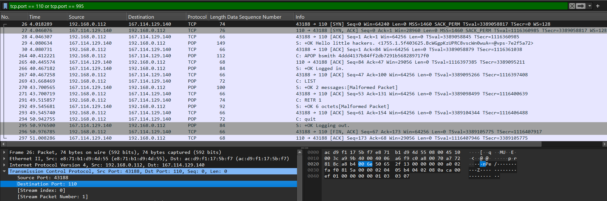
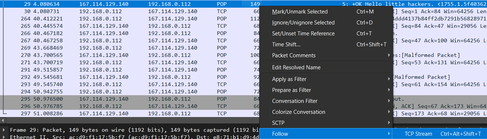
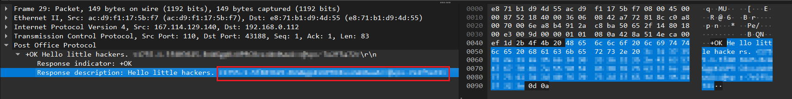
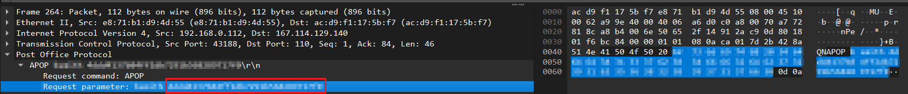
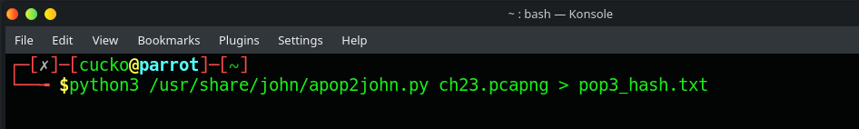
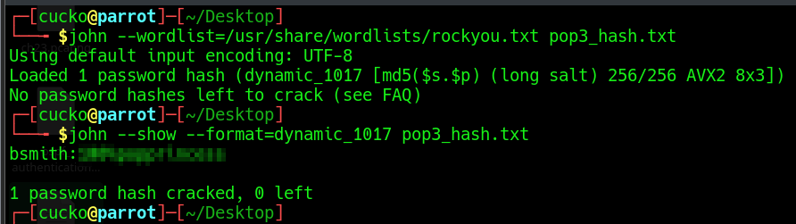

k-41@ctf:~/writeups/network$ cat pop-apop.md
Challenge 2: POP - APOP
Disclaimer
This write-up is for educational purposes only. Out of respect to the root-me community and the challenge creators, I've redacted all revealed information, so you do the work yourself and learn a thing or two along the way.
Objective
This is a network CTF challenge from Root-Me APOP - POP challenge. Given a PCAP file containing POP traffic, identify the APOP authentication method and extract the flag.
If the creators or an admin believes this write-up violates their intellectual property rights, they can contact me using the contact page to have it heavily redacted or removed.
What is POP?
Post Office Protocol (POP) is a standard method that allows email applications (such as Outlook or Thunderbird) to download emails from a mail server to your computer. The most commonly used version is POP3, which is still widely supported today.
POP Workflow
POP3 works by connecting your email application to a mail server, authenticating your account, checking for available messages, and downloading those messages to your device.
-
The email client identifies the POP server
Your email application is configured with a POP server address, such as
pop.example.com. -
The client connects to the server
The client opens a connection using one of the common POP3 ports:
- Port 110 — standard POP3
- Port 995 — POP3 using SSL/TLS encryption
-
A secure connection may be established
If SSL/TLS is enabled, the client and server create an encrypted connection. This helps protect login information and email content while it is being transferred.
-
The server sends a greeting
Once the connection has been established, the POP server tells the client that it is ready.
+OK POP3 server ready -
The client authenticates the user
The email client provides the user's account information so the server can verify their identity.
USER john@example.com PASS passwordModern mail servers may use more secure authentication methods instead of transmitting a normal password directly.
-
The server verifies the account
If the login details are correct, the server gives the client access to the mailbox.
-
The client checks the mailbox
The client can use the
STATcommand to check how many messages are available.STATThe server may respond with:
+OK 5 24567This means there are 5 messages with a total size of 24,567 bytes.
-
The client requests a list of messages
The
LISTcommand can be used to display the available messages and their sizes.LIST +OK 5 messages 1 4200 2 5100 3 3800 4 6200 5 5267 -
The client identifies previously downloaded emails
POP3 clients can use the
UIDLcommand to obtain a unique identifier for each email.UIDL 1 A001 2 A002 3 A003These identifiers help the email application avoid downloading the same message repeatedly.
-
The client downloads an email
To retrieve a message, the client sends the
RETRcommand followed by the message number.RETR 1The server then sends the full email, including its headers, subject, body, sender information, and attachments.
-
The email is stored locally
Once downloaded, the email application stores the message on the user's computer or device.
Mail Server ↓ POP3 ↓ Email Client ↓ Local Storage -
Additional emails are downloaded
The client repeats the retrieval process for the remaining messages.
RETR 2 RETR 3 RETR 4 RETR 5 -
Messages may be marked for deletion
POP3 can remove downloaded messages from the server using the
DELEcommand.DELE 1However, many email applications include an option such as "Leave a copy of messages on the server". If enabled, the messages remain on the server after being downloaded.
-
The client ends the session
When the client has finished, it sends the
QUITcommand.QUIT -
The server closes the connection
The server ends the POP3 session. Messages that were marked for deletion are normally removed at this stage.
Example POP3 Conversation
Client connects to pop.example.com
Server: +OK POP3 server ready
Client: USER john@example.com
Server: +OK
Client: PASS ********
Server: +OK Mailbox ready
Client: STAT
Server: +OK 3 12000
Client: LIST
Server:
1 4000
2 3500
3 4500
Client: UIDL
Server:
1 A001
2 A002
3 A003
Client: RETR 1
Server: [email contents]
Client: RETR 2
Server: [email contents]
Client: RETR 3
Server: [email contents]
Client: DELE 1
Server: +OK
Client: DELE 2
Server: +OK
Client: DELE 3
Server: +OK
Client: QUIT
Server: +OK GoodbyeMethodology
OK, so enough with the history class presented by yours truly, AI. From now on expect a more human way of talking :)
So one thing you should retain from the previous text is that POP uses either port 110 or 995 if SSL/TLS is enabled (hopefully not 🤞), and the password is sent in plaintext OR hashed using the APOP method. And since this is a CTF, it's most definitely going to be the latter.
Opening up the pcap file we can see a lot of packets, so we need to clean this up using a filter: tcp.port == 110 or tcp.port == 995

Ok, so we cleaned things up and we can see that the port used here is 110, which is why we can read the greeting message and communication between the client and server in plaintext. Easy win — we just need to follow the stream!

Uh oh, looks like we found something, but most likely not the flag! Looks like an MD5 hash of the password... OK, so back to the drawing board — we need to explain what this is and how we can use it.
The APOP method is a challenge-response authentication mechanism that uses a shared secret (the password) and a unique challenge (the timestamp) to generate a digest. The server sends a unique timestamp to the client, which then appends it to the password and computes an MD5 hash. This hash is sent back to the server for verification.
MD5(TIMESTAMP_CHALLENGE || PASSWORD)
Let's collect the pieces — we need the timestamp challenge, the hash, and a tool that will crack this hash.
Looking closer at the first Hello packet, we can see the timestamp challenge is <1755[REDACTED]5a72>, angle brackets included.

In the response packet, we can see the MD5 hash sent next to the username: 4ddd[REDACTED]17f0

So we have all the pieces, and with some luck we can crack this, using JohnTheRipper. The hash file compatible with JohnTheRipper should look like this:
{user}:$dynamic_1017${hash}$HEX${salt}In our case:
bsmith:$dynamic_1017$4ddd[REDACTED]17f0$HEX$3c31[REDACTED]323eAlternatively, there's a John script called apop2john.py that automatically extracts the hash and salt from the pcap file and generates a hash file compatible with JohnTheRipper.

john --wordlist=/usr/share/wordlists/rockyou.txt pop3_hash.txt
And there we have it — the password is REDACTED. We can now go validate our challenge with it.